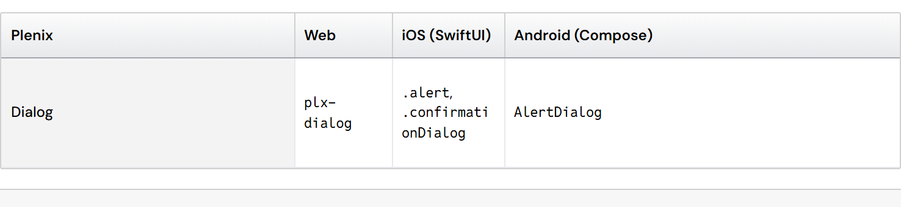
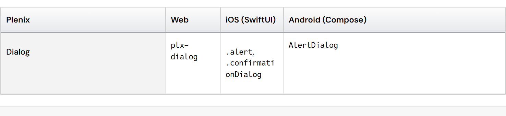
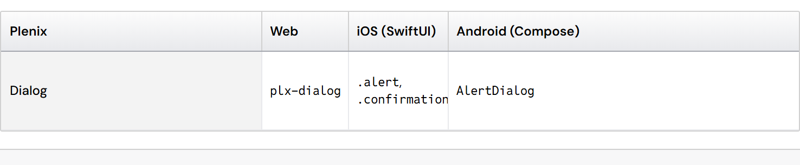
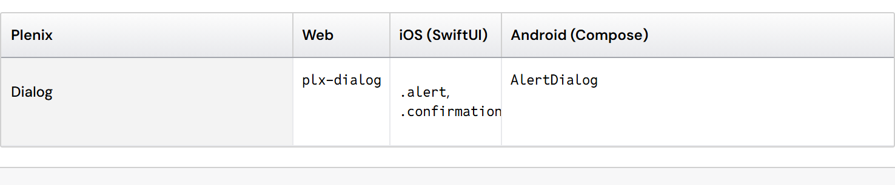

Tall table rows: middle or top? (#256)
When one cell in a row wraps to several lines, the row grows. Today every cell's content sits in the middle of that tall row, so cells with one line and cells with three lines start at different heights. The typography test flags this as "Mono beside DM Sans, 8px apart" on 53 spec pages.
What mainstream systems do
- Fluent 2 (Microsoft): the Table cell is centered: verticalAlign: middle (or alignItems: center in its flex layout). Rows have a set height, so text rarely wraps.
- Material: the data table has fixed row heights (52px by default) and sets no vertical alignment, so cells sit in the middle; it does not plan for wrapped text.
- Carbon (IBM): "Column header and row text is always centered in the row, with the exception of the extra large" row, which starts 16px from the top. Extra large is the size "recommended if your data is expected to have two lines of content in a single row": tall, multi-line rows are top-aligned.
- Spreadsheets and document tables (Excel, Google Docs, GitHub Markdown) start multi-line cells at the top, so every cell's first line reads across.
Pattern: single-line rows are centered everywhere; when rows hold several lines, systems that plan for it align to the top.
The real table (Dialog page, platform names)




The options
- A · Top-align cells in tall static Table rows. One-line rows look exactly as today. In tall rows every cell's first line lines up, as Carbon does for two-line rows. The cells' top padding is made equal so the first lines match exactly.
- B · Give code columns enough width. Identifiers like .confirmationDialog stay on one line; the column fits its longest value (as DataGrid columns already fit their content up to 360px). Fewer tall rows, but long identifiers can still wrap in narrow panes.
- C · Keep the middle, re-record the test. Matches Fluent and Material; the offset stays and the test baseline is rewritten to accept it.
Recommendation: A, with B where columns hold code. It matches Carbon's rule for multi-line rows and how people read tables with wrapped text, keeps one-line rows unchanged (they are centered, as in Fluent and Material), and makes the typography test pass for the right reason. Sources: Carbon · Data table · Style ("always centered in the row, with the exception of the extra large"); Fluent UI React v9 · TableCell styles; Material Components · data table theme (fixed row height).